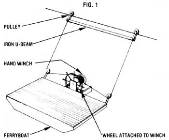
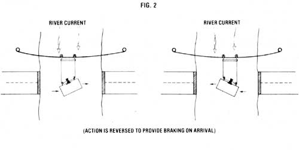

Several years ago, I made the acquaintance of a unique ferryboat that transports motorists between Bizard Island and Lavalon-the-Lake ... two resort communities located in the Canadian province of Quebec near Montreal. What made this little ferry special was that its owners relied solely on the natural force of the river's current to propel their "water shuttle" back and forth.
The system they set up couldn't be much simpler. First, the men strung a wire across the river and "anchored" it on both shores. Then they constructed a pulley system that attaches the front right and rear right corners of the boat to the overhead cable. (An iron U-beam is used, along with the pulleys, for added support.)
A hand winch was also bolted to the ship's wheel. This allows the "skipper" to turn the wheel (and thus turn the winch as well) in order to adjust the position of the ferry ... or to stop the boat as it nears the opposite shore.
Actually, the accompanying diagrams tell the story as well as any words can. This idea is certainly nothing new, yet it's amazing to me how many people continue to run their motorized ferries to and fro without even considering the merits (and obvious economic benefits) of letting nature's forces do the work for free.
|
|
 |
 |